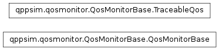

qppsim.qosmonitor.QosMonitorBase module¶
Documentation¶
Module with the base class for QoS Monitors and a class to store the QoS values so they can be easily traced by the TraceWriter. It also provides a constant dictionary with the QoS parameters associated with each QCI value.
-
qppsim.qosmonitor.QosMonitorBase.QOS_LIMITS_PER_QCI= {1: (True, 2, 100, 0.01), 2: (True, 4, 150, 0.001), 3: (True, 3, 50, 0.001), 4: (True, 5, 300, 1e-06), 5: (False, 1, 100, 1e-06), 6: (False, 6, 300, 1e-06), 7: (False, 7, 100, 0.001), 8: (False, 8, 300, 1e-06), 9: (False, 9, 300, 1e-06)}¶ Dictionary with the QoS limits and parameters associated with each QCI value Key: QCI Value: Tuple with GBR/NGBR flag, Priority, Maximum Delay, Error and Loss Rate
-
class
qppsim.qosmonitor.QosMonitorBase.QosMonitorBase[source]¶ Bases:
objectBase class for QoS Monitors. Defines a method for getting and aggregating the QoS metrics from the active bearers. Implements a method to trace the collected QoS metrics.
-
class
qppsim.qosmonitor.QosMonitorBase.TraceableQos(minimum, average, maximum, last)[source]¶ Bases:
objectClass that provides a format to trace QoS values, composed by the minimum, average, maximum, and last values obtained.
-
average¶ Get the average value of the QoS values.
-
last¶ Get the last value of the QoS values.
-
maximum¶ Get the maximum value of the QoS values.
-
minimum¶ Get the minimum value of the QoS values.
-